Inhalt
1Kennzahlen — Aktueller Überblick der Lage
2Analyse — Identifizierung von Häufungen (Airlines, Zeiträume)
3Rückschlüsse — Handlungsempfehlungen
Auftrag & Bedingungen
Rahmen der Analyse
Betrachtungsraum
- Nur Flüge von oder nach LAX (geplante An-/Abflugzeiten)
- Zeitraum 2015–2017
- Gestrichene oder umgeleitete Flüge ausgeschlossen
Definition Unpünktlichkeit
- ≥ 5 Minuten Abweichung von der geplanten Zeit
- Gilt für zu früh UND zu spät
- Getrennte Betrachtung nach Abflug/Ankunft möglich
Gesamtüberblick
1.264.229 Flüge, 2015–2017

1.264.229 Flüge 2015–2017 an LAX — 377.347 pünktlich (30 %), 886.882 verspätet (70 %).
Verspätungen nach Richtung
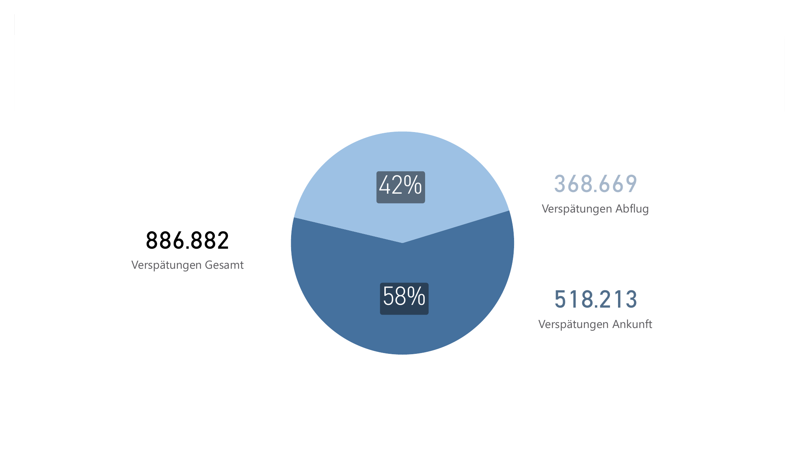
368.669 Abflug- und 518.213 Ankunftsverspätungen, zusammen 886.882.
Kennzahlen im Detail

13 betroffene Fluggesellschaften, On-Time Performance 29,85 %, Delay Index 18,54.
Verspätung pro Tag und Flug
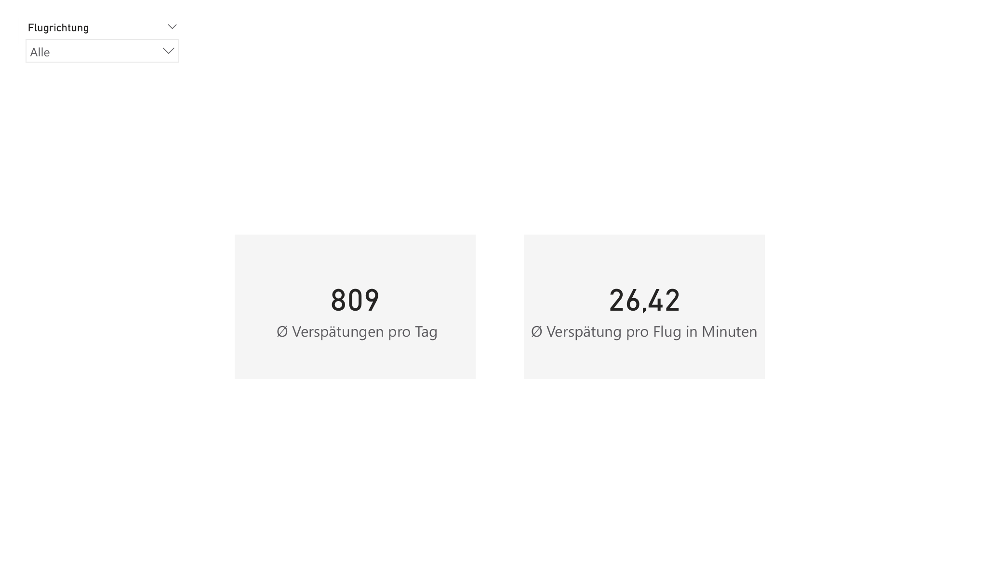
Ø 26,42 Minuten Verspätung pro Flug (Ankunft 26,51 / Abflug 26,30).
Ranking nach Ø-Verspätung
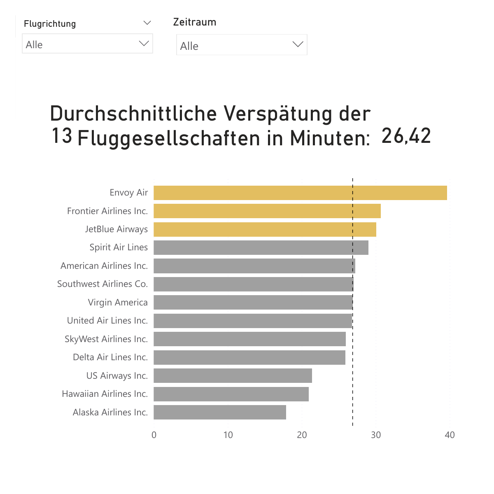
13 Fluggesellschaften sortiert nach Ø-Verspätung in Minuten. Top 3: Envoy Air, Frontier Airlines, JetBlue Airways.
Anteil der Top-3 an der Gesamtverspätung

31.092 von 886.882 Verspätungen = 3,51 % — die 'unpünktlichsten' Airlines sind kaum relevant für die Gesamtzahl.
Erkenntnisse: Anteil variiert
Beobachtungen
- Insgesamt kommen Envoy Air, Frontier Airlines und JetBlue Airways auf nur 3,51 % der Gesamtzahl an Verspätungen
- Betrachtet man 2016–2017 (ohne Envoy Air und US Airways), wird der Einfluss deutlicher
- Auch bei getrennter Betrachtung von Ankunft und Abflug variieren die Anteile deutlich
- 2016–2017 höchste Ø-Unpünktlichkeit: American Airlines, Frontier Airlines, JetBlue Airways — Anteil an der Gesamtzahl: 22,31 %
Wichtige Erkenntnis: Indikator verzerrt
Die höchste durchschnittliche Unpünktlichkeit erlaubt eine gewisse Verzerrung der Werte und eignet sich nicht zuverlässig als Indikator. Airlines mit extremen Durchschnittsverspätungen haben oft nur wenige Flüge — ihr hoher Durchschnitt hat wenig Einfluss auf die Gesamtzahl der Verspätungen. Der Wert ignoriert die Häufigkeit verspäteter Flüge im Verhältnis zur Gesamtzahl.
Anzahl Verspätungen — aggregiert
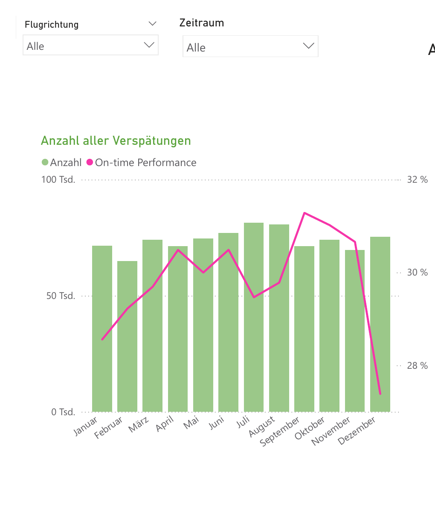
Nach Jahr/Quartal/Monat/Tag, mit On-Time-Performance-Linie (~28–32 %).
Summe Verspätungen — aggregiert
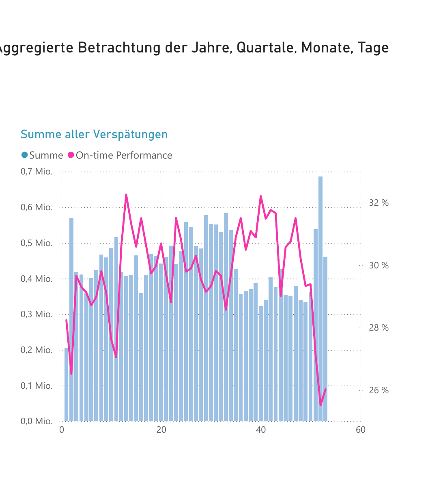
Nach Jahr/Quartal/Monat/Tag, 0–0,7 Mio. Verspätungsminuten.
Anzahl Verspätungen — kontinuierlich
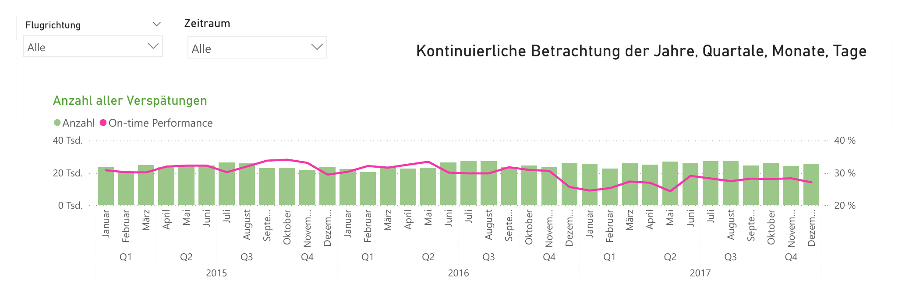
Q1–Q4, 2015–2017 im Verlauf.
Summe Verspätungen — kontinuierlich
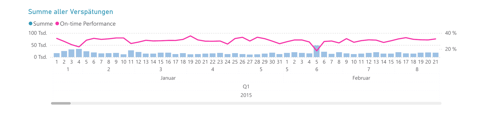
Detailansicht Januar/Februar 2015 auf Tagesebene.
Wochenansicht — Anzahl (Linie)
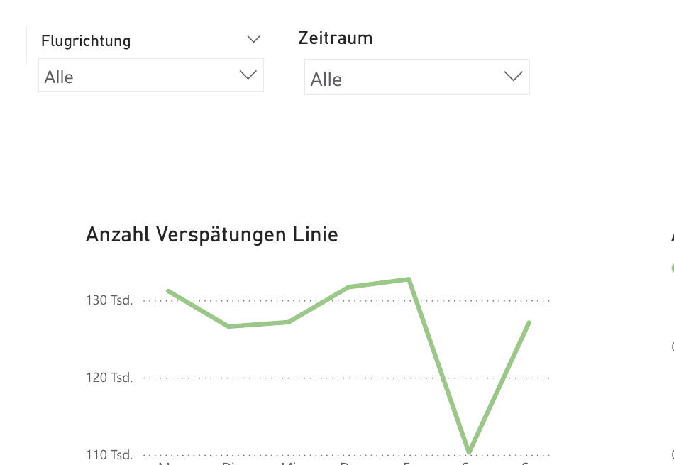
Mo–So, 105–135 Tsd. Verspätungen.
Wochenansicht — Anzahl mit OTP
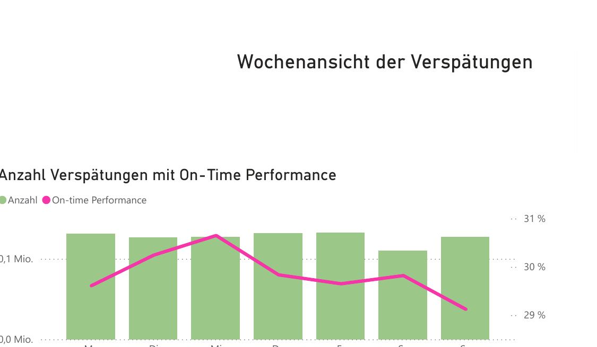
Mo–So, On-Time Performance ~29–31 %.
Wochenansicht — Summe (Linie)
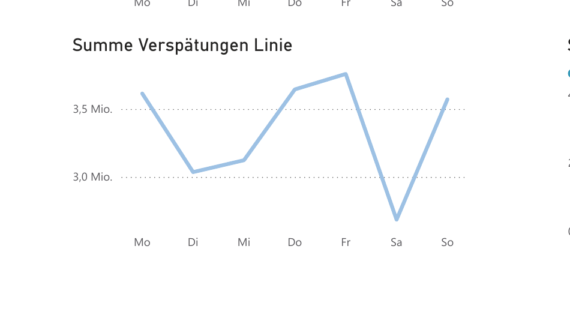
Mo–So, Summe der Verspätungsminuten.
Wochenansicht — Summe mit OTP
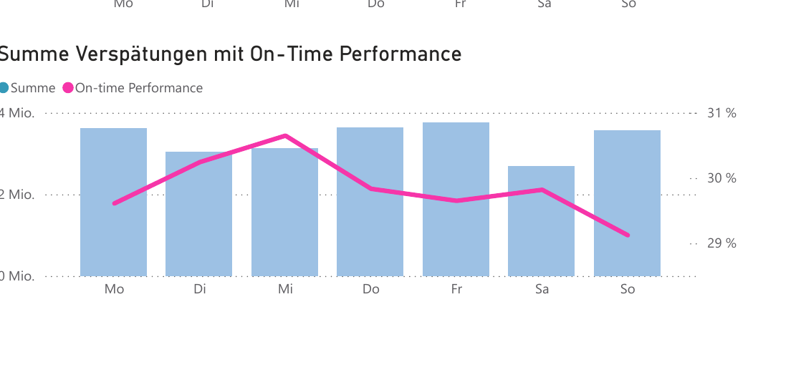
Mo–So, On-Time Performance ~29 %.
Tagesansicht — Anzahl nach Uhrzeit
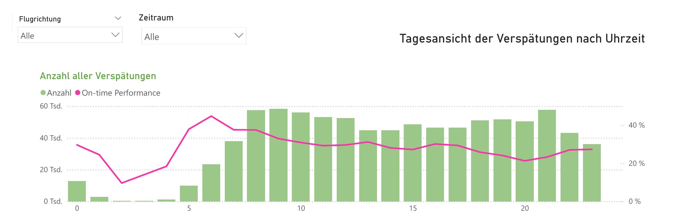
Stundenverlauf 0–23 Uhr, Peaks 6–9 Uhr und später Nachmittag.
Tagesansicht — Summe nach Uhrzeit
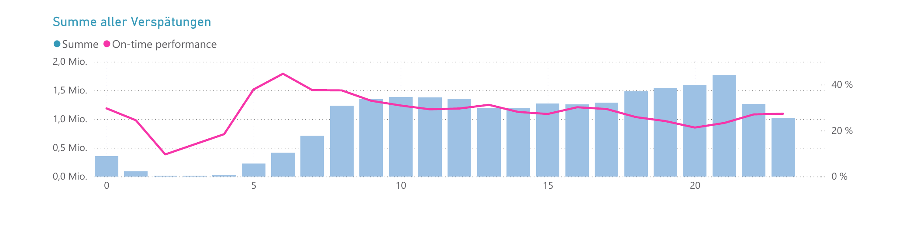
Stundenverlauf 0–23 Uhr.
Erkenntnisse Zeitebenen
Langfristig — Jahre, Quartale, Monate
- Über die Jahre insgesamt steigende Verspätungen
- Saisonale Muster: Anstieg in Q2, Spitzenwerte in Q3, niedrigster Wert in Q1
- Feiertage und Urlaubszeiten lassen sich deutlich ablesen
Kurzfristig — Wochentage, Tagesstunden
- Tagesansicht zeigt starke OTP-Schwankungen — Unbeständigkeit im operativen Ablauf
- Samstag: deutlich geringste Anzahl und Summe an Verspätungen
- Freitag, Sonntag und Montag: Werte steigen wieder deutlich an
- Peaks am Morgen (6–7 und 8–9 Uhr) und am späten Nachmittag
Handlungsempfehlungen
Aus den gesammelten Erkenntnissen
Operative Planung optimieren
Saisonale und wöchentliche Muster in die Planung einbeziehen- Analysierte langfristige saisonale Häufungen sowie Erkenntnisse aus Wochen- und Tagesansicht verstärkt berücksichtigen
- Spitzenwerten gezielt vorbeugen
- → Informationen teilen und in Planungen berücksichtigen
Research fortführen
Ursachen extremer Ausreißer klären- Teils extreme Spitzen in Anzahl und Summe der Verspätungen erkennbar
- Auslöser sollten aufgeklärt werden, um Wiederholungen zu vermeiden
- → Erkundigungen bei Fachabteilungen einholen
Indikator verbessern
Aussagekräftigere Kennzahlen kombinieren- Ø-Verspätung pro Flug zeigt die Schwere, nicht die Häufigkeit oder den Einfluss auf den Gesamtflugverkehr
- Sinnvolle Kombinationen: On-Time Performance & Summe, Anzahl & Summe, Delay Index
- → Identifikation geeigneter Indikatoren
Danke.
On-Time Performance Airlines — Anzahl
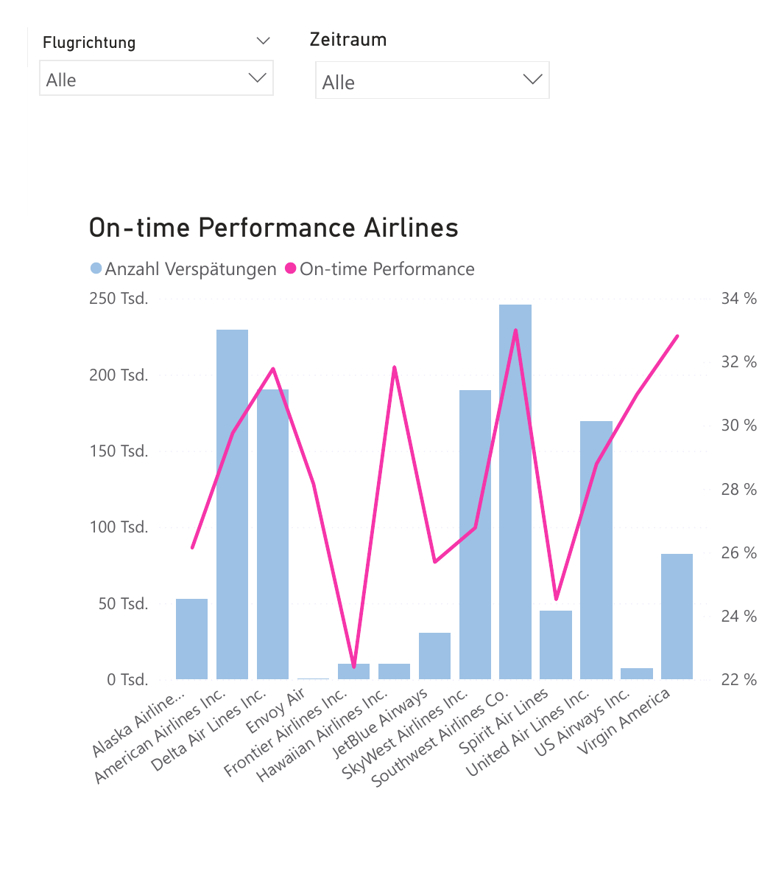
Anzahl Verspätungen je Airline mit On-Time-Performance-Linie.
On-Time Performance Airlines — Summe
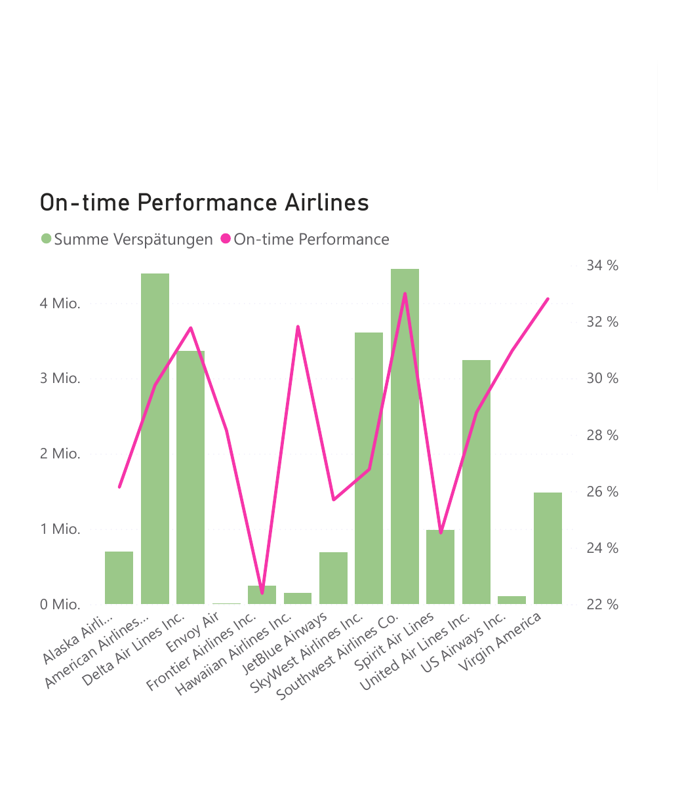
Summe Verspätungen je Airline mit On-Time-Performance-Linie.
Ranking nach Anzahl der Verspätungen
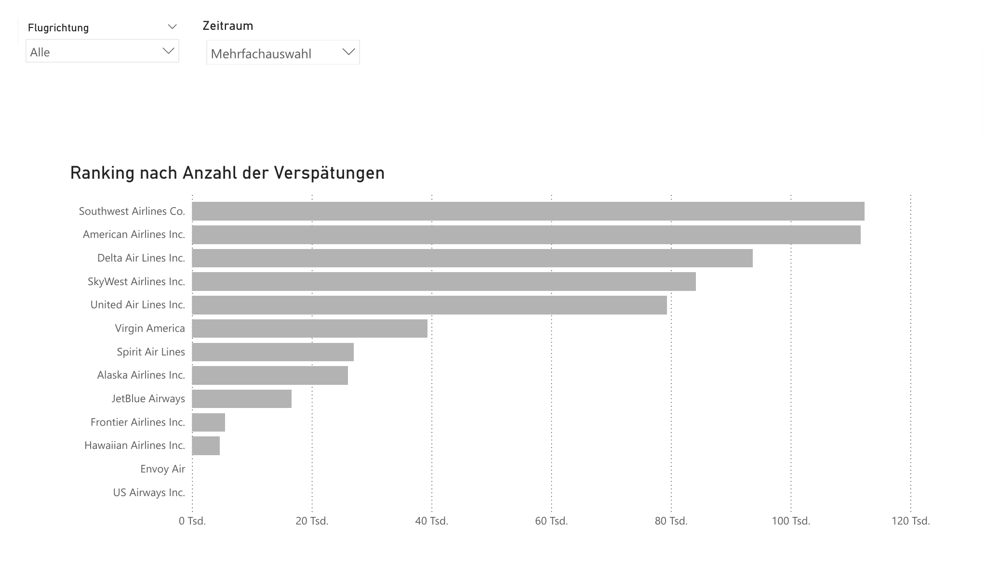
Alle 13 Fluggesellschaften sortiert nach absoluter Anzahl Verspätungen.
Delay Index Airlines
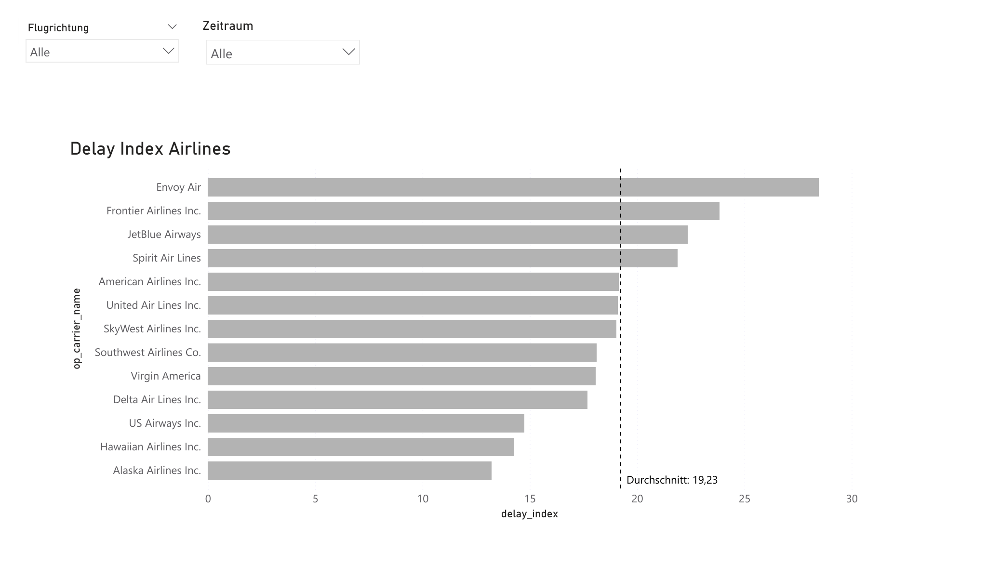
Delay Index je Airline, Durchschnitt 19,23.
Delay Rate Airlines
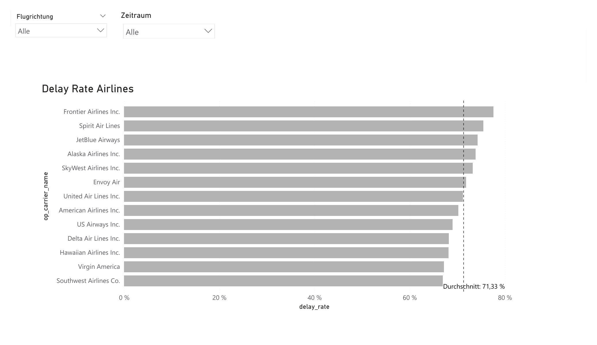
Delay Rate je Airline, Durchschnitt 71,33 %.